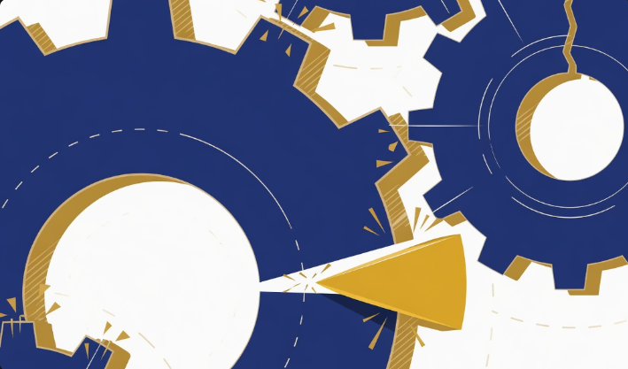

One Hand on the Brake
A single national veto can freeze the whole Union. Federation is the end of paralysis, not the death of the nation.
Europe does not lack power. It lacks the ability to use it. On the questions that decide a continent's place in the world, foreign policy, defence, enlargement, migration, the Union still moves by unanimity. Every member holds a veto, which means any one capital, for reasons entirely its own, can halt the other twenty-six. We call this consensus. It is closer to paralysis, dressed up as respect for sovereignty.
The cost is paid in public, again and again. Sanctions are announced, then watered down to the price of the most reluctant government. A common position on a war at the border arrives weeks after the moment that needed it has passed. Enlargement, the Union's single greatest instrument of influence, stalls because one leader has a grievance to trade. A body that can be stopped by one hand on the brake cannot lead, cannot deter, and over time cannot be taken seriously, by its partners or its rivals.
The veto survives because it feels safe. Each capital keeps it as insurance, a guarantee that nothing can be done to them against their will. But the guarantee is an illusion. The decisions that matter get made regardless; they are simply made elsewhere, in Washington, in Beijing, in Moscow, by powers that do not need twenty-seven signatures to act. A Union that cannot act does not protect its sovereignty. It quietly hands it away.
The answer is not a superstate that dissolves its nations into a single grey administration. Europe's strength has always been its plurality, and a serious federation guards it. It is a federation with the discipline to leave to each people what belongs to it, and the strength to decide together only what must be decided together. In practice that means a short, clear list: qualified-majority voting on foreign and security policy, an elected Commission president, and a written constitution that states plainly where power sits and who is accountable for it. It is the answer to two failures at once: the small nationalism that clings to a veto it can no longer use, and the managerial centre that would govern without a mandate. Federation is neither.
Critics call this overreach, a power grab by Brussels. The truth runs the other way. The status quo is the real surrender, because it leaves Europe a spectator while others write the rules it then has to live by. Pooling the few decisions that must be common is not the loss of sovereignty; it is the only way left to exercise it at the scale the century demands.
Europe is not too united. It is united in name and divided in every moment that counts. Ending the veto will not finish the federation, but it is where it begins: the first lock removed from a machine built to stall. Get it right, and a continent that has reinvented itself a hundred times can decide its own future as one again, rather than watch it decided elsewhere. That is not nostalgia for empire, nor a surrender to Brussels. It is the oldest European ambition there is: to be strong enough, together, to stay free.

How one country can freeze the whole of Europe
One stubborn government can stop the other twenty-six. Here's why that quietly decides your future.
Imagine twenty-seven friends trying to agree on where to eat, with one rule: everyone has to say yes. One person holds out, and nobody eats. That is roughly how Europe makes some of its most important decisions, the ones about foreign policy, defence and migration. Every country gets a veto. So any single government can block all the others, for whatever reason it likes.
It sounds fair. In practice it makes Europe slow exactly when the world is moving fast. While everyone waits for the last holdout to come around, the moment passes. Sanctions get watered down to whatever the most reluctant government will accept. A response to a war on the doorstep arrives weeks too late. And the really big calls about Europe's future end up being made somewhere else entirely: in Washington, in Beijing, in Moscow, by people who don't need twenty-seven signatures to act.
Every country keeps its veto because it feels like protection, a guarantee that nothing can be forced on it. But that protection is mostly an illusion. The decisions still happen. They just happen without Europe in the room. "Sovereignty" you can never actually use isn't really sovereignty; it's a nice word printed on a machine that won't start.
The fix isn't some giant super-state that swallows your country and flattens everything into one grey blur. The opposite, actually. The idea is to leave everything local to the people it belongs to, and only decide together the handful of things that have to be decided together, like whether Europe responds as one to a crisis. For those, let a strong majority decide instead of letting one hand pull the emergency brake.
Why does this matter to you? Because the slow, stuck version isn't the safe version. In a fast world, slow is just a quiet way of losing, of watching decisions about your security, your economy and your future get made by bigger players while Europe argues with itself.
Europe doesn't need to become one country. It needs to stop freezing itself every time one government says no.